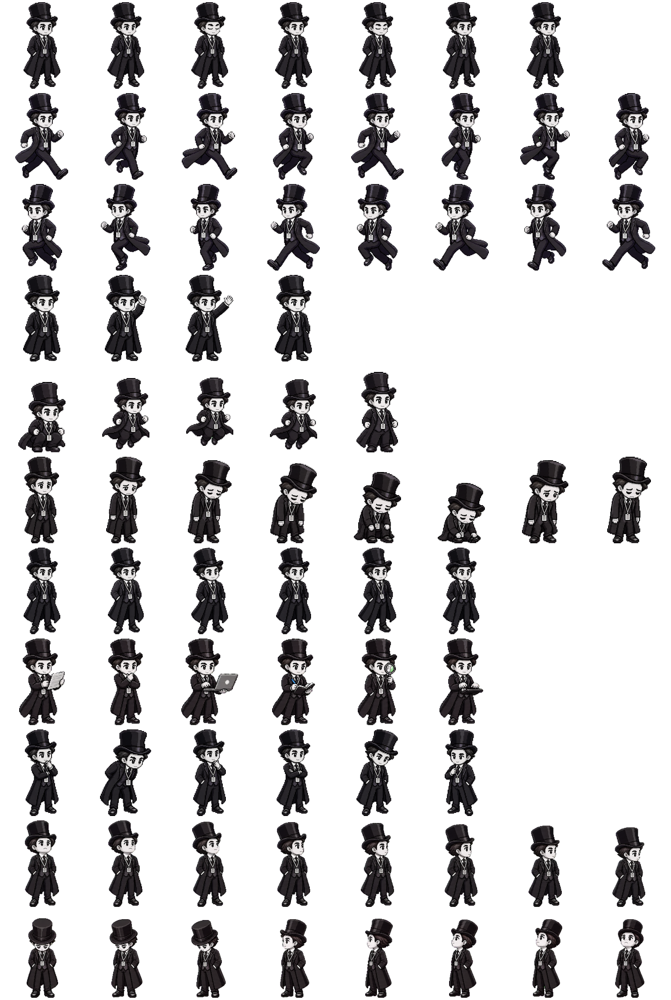

156
Monochrome Topper
A complete animation atlas for Topper, the tiny dapper office companion in a top hat, long coat, formal suit, and work lanyard. Eleven rows hold his idle, walking, running, waving, jumping, crying, working, and sixteen-direction looking states as one monochrome character study built to move.
SPRITESHEET · WEBP · CODEX PET · 8 × 11 ATLAS

— Phosphor, 2026